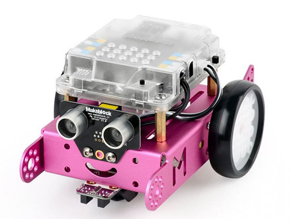

我們有完善的課程
多比STEAM課程介紹

Scratch
Scratch是MIT研發出來的積木類型的程式設計。使用者只要用滑鼠拖曳程式區塊到腳本區，就可以用組合的積木的方式來撰寫程式碼。讓初學者不需先學習程式設計語言便能設計作品。

Scratch jr
Scratchjr適合孩子創作屬於自己的故事書小遊戲。在這學習過程中，孩子可以學到設計過程，解決問題的能力和在電腦前表現自己的創意。Scratchjr讓年紀更小的孩子也能接觸程式設計。

Ozobot
ozobot：顏色路徑機器人！在ozobot的底部有五個感測器，可以偵測不同顏色和路徑，隨著偵測到的路徑和顏色行走。孩子為機器賦予新的生命並藉由對機器下命令，讓孩子走在學習編程的道路上。

mBot
mBot是一款動手編輯程式、學習電子與機器人學的多功能解決方案. 透過執行mBlock的Scratch, 你可以使用藍芽或2.4G無線模組與mBot連線. 容易組裝的特性﹐使你在學習上有無限可能。

Micro:bit
英國政府為向下扎根運算思維程式教育，與 BBC、ARM 等研發Micro:bit 免費發送給英國中、小學學生。在全世界的數位浪潮下，有效掌握對程式邏輯和語言的掌控，將對未來有舉足輕重的影響。

App Inventor
Google App Inventor是一個完全線上開發的Android程式環境，拋棄複雜的程式碼而使用積木式的堆疊法來完成您的Android程式。對於想要用手機控制機器人的使用者而言，只要使用基本元件即可。
不插電科學
不插電程式學習源自於GOOGLE資助的"CS Unplugged"不插電科學這本書由三位紐西蘭和澳洲大學教授希望培育5-12歲的孩子不用電腦也能擁有程式邏輯.運算思維.解決問題的能力所撰寫。

魔術方塊
魔術方塊，為由匈牙利建築學教授暨雕塑家魯比克·厄爾諾於1974年發明的機械益智玩具。魔術方塊蘊含數學的原理及邏輯、幾何、空間的概念對兒童的邏輯思考，立體思維與小肌肉訓練都有很大的助益。